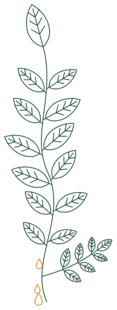
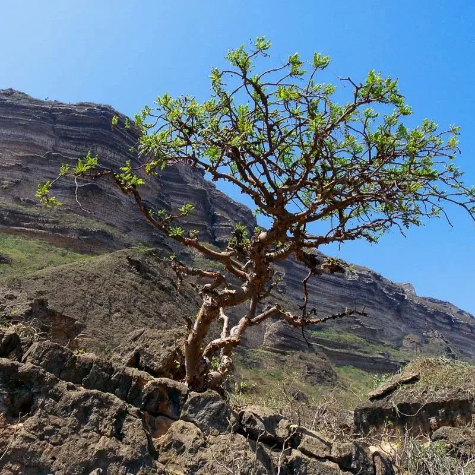
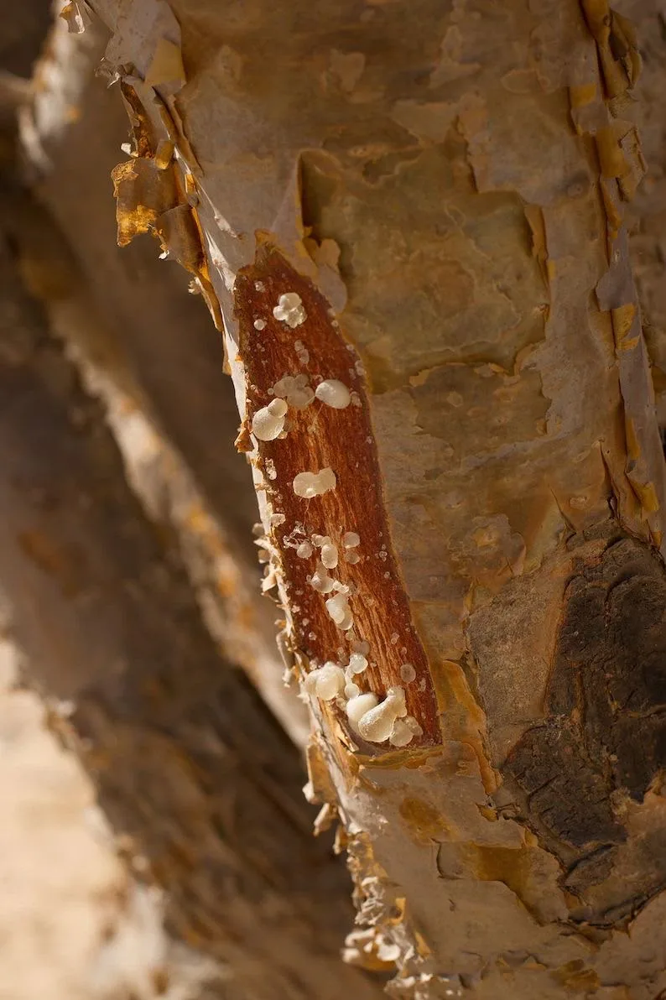

Home / Maydi Botanicals
04 · Maydi Botanicals
Raw Somali materials, led by Maydi.
اللبان والمر والراتنجات والزيوت العطرية الطبيعية النادرة من الصومال
Rare Somali frankincense, myrrh, resins and single-note aromatic oils, supplied to perfume designers and manufacturers around the world.



Boswellia frereana

From the cliff to the tear
Maydi grows on Boswellia trees rooted in the vertical limestone cliffs of northern Somalia, and nowhere else.
- 01

The tree, on the cliff. - 02

Bark that peels like paper. - 03

A shallow cut; the resin weeps. - 04

Dried into tears, sorted by hand.
Why Maydi is different
From the house's own material sheet.
| Maydi pure resin | Common gum resin | |
|---|---|---|
| Species | Boswellia frereana | Boswellia carterii |
| Gum | Virtually gum-free | Water-soluble gum |
| Burn and texture | Clean burn, velvety texture | — |
| Scent | Deeply balsamic and woody, with citrus-lemon top notes and honey-like warmth | — |
| Uses | Essential oil and base note in high-end perfumery; incense and ritual; traditional chewing gum | — |
What we supply
Grades, minimum orders and prices are confirmed per request.
Maydi frankincense
PriceThe highest-grade Boswellia frereana resin, sorted by hand.
Myrrh
PriceSomali myrrh resin for perfumery and incense.
Resins
PriceOther Somali aromatic resins, on request.
Single-note aromatic oils
PriceNatural oils for perfume designers, led by Maydi.